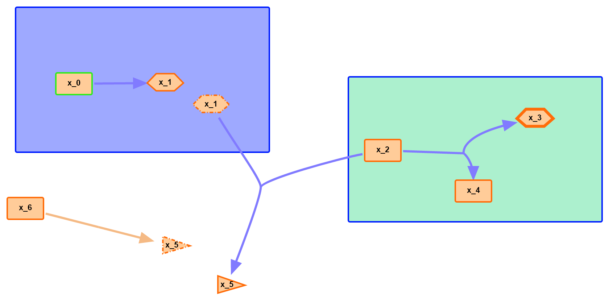

Welcome to SBMLDiagrams’s documentation!¶
Contents:
Introduction¶
SBMLDiagrams can visualize SBML to PNG/JPG/PDF files by visualizeSBML. It also supports users to import, edit or export an SBML file. This package supports SBML level 3, including layout and render. In detail, it does not only provide position, size and color information for different graphical objects but also supports different shapes of nodes or alias nodes. If you use any part of this python package, please cite the Gihub website (https://github.com/SunnyXu/SBMLDiagrams).
Code Examples¶
Visualize an SBML file to a PNG.
from SBMLDiagrams.visualizeSBML import *
import os
dirname = "path//to"
filename = "test.xml"
f = open(os.path.join(dirname, filename), 'r')
sbmlStr = f.read()
f.close()
if len(sbmlStr) == 0:
print("Empty SBML!")
else:
display(sbmlStr,fileFormat = 'PNG')
Import, edit and write to an SBML file.
from SBMLDiagrams.processSBML import *
import os
dirname = "path//to"
filename = "test.xml"
f = open(os.path.join(dirname, filename), 'r')
sbmlStr = f.read()
f.close()
df = load(sbmlStr)
print(df.getCompartmentPosition("compartment_id"))
print(df.getNodeFillColor("node_id"))
print(df.isBezierReactionType("reaction_id"))
df.setCompartmentFillColor("compartment_id", "white", opacity = 0.5)
df.setCompartmentBorderColor("compartment_id", [255, 255, 255])
df.setNodeSize("node_id", [50.0, 30.0])
df.setNodeTextFontColor("node_id", "#000000", opacity = 1.)
df.setReactionLineThickness("reaction_id", 3.)
sbmlStr_layout_render = df.export()
f = open("output.xml", "w")
f.write(sbmlStr_layout_render)
f.close()
Figure Examples¶
1) An example without compartment. There are different shapes of nodes with different fill colors. Texts can be placed outside the nodes with designed positions. There are also reactions with different fill colors. x_1 is an example of alias node.

2) An example with compartments. The compartments are filled with different colors. There are different shapes of nodes with different border colors. x_1 and x_5 are examples of alias nodes.
{kind=link}
An example with only nodes (no reactions in the network). There are five types of node shapes
with different fill colors and border colors.

An example with long text contents.
{kind=link}